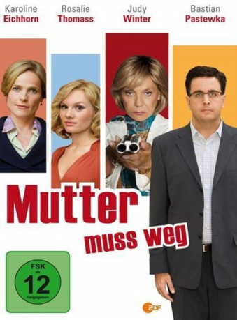

IMDB-Wertung: 5.8 / 10
IMDB-Wertung: 5.8 / 10  Metascore:
Metascore: 
Tristan ist es mit Ende dreißig noch nicht gelungen, sich aus den Fängen seiner dominanten Mutter zu lösen. Der Kroate Josip, ein Auftragskiller, bietet ihm an, sein Problem zu lösen ...
 IMDB-Wertung: 5.8 / 10 Metascore:
Tristan ist es mit Ende dreißig noch nicht gelungen, sich aus den Fängen seiner dominanten Mutter zu lösen. Der Kroate Josip, ein Auftragskiller, bietet ihm an, sein Problem zu lösen ...
Jahr: 2012
Dauer: 88 Minuten
FSK: 12
Land: Deutschland Studio: Alive Vertrieb und MarketingTonspuren:
Untertitel:
Auflösung: 720p (1280x720) Größe: 1669 MB
Genre: Komödie
Regisseur: Edward Berger
Drehbuch: Marc Terjung
Soundtrack:
Darsteller:
 Bastian Pastewka als Tristan
Bastian Pastewka als Tristan Judy Winter als Hannelore
Judy Winter als Hannelore Götz Schubert als Prof. Blatschik
Götz Schubert als Prof. Blatschik Jürgen Schornagel als Bernhard
Jürgen Schornagel als Bernhard Rosalie Thomass als Anita
Rosalie Thomass als Anita Karoline Eichhorn als Dr. Korff
Karoline Eichhorn als Dr. Korff Michael Klammer als Carlos
Michael Klammer als CarlosDatei: X:\2012(G-M)\Mutter muss weg (2012, FSK12, 1280x720).mkv seit 09.10.2017
Festplatte: HD 2012(A-M)
 Es gibt insgesamt 112 Filme in der Gruppe '2012(G-M)'
Es gibt insgesamt 112 Filme in der Gruppe '2012(G-M)'